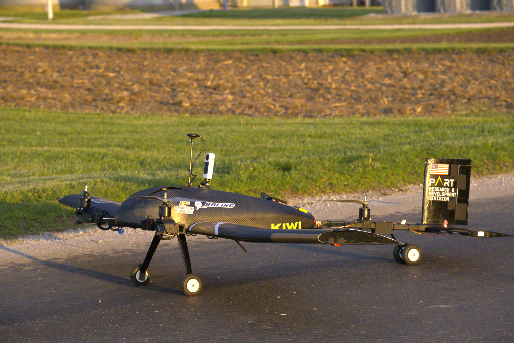
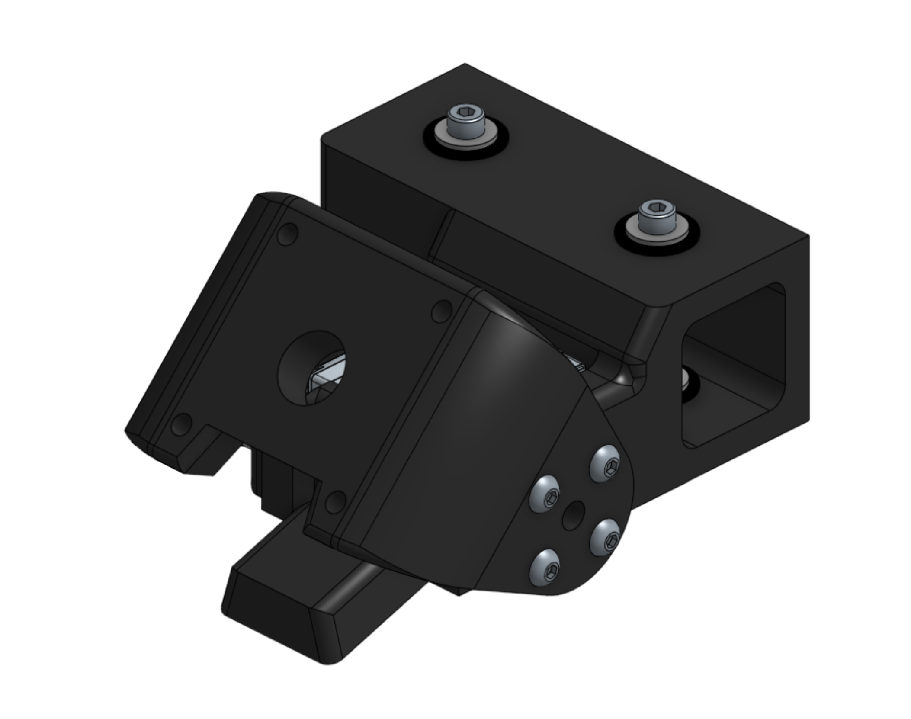
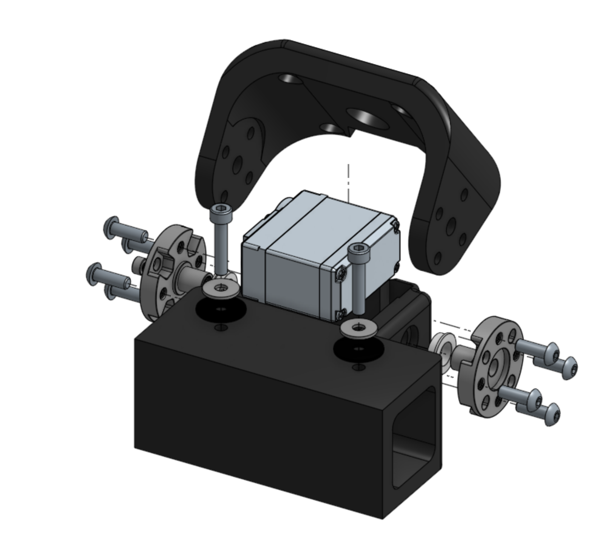
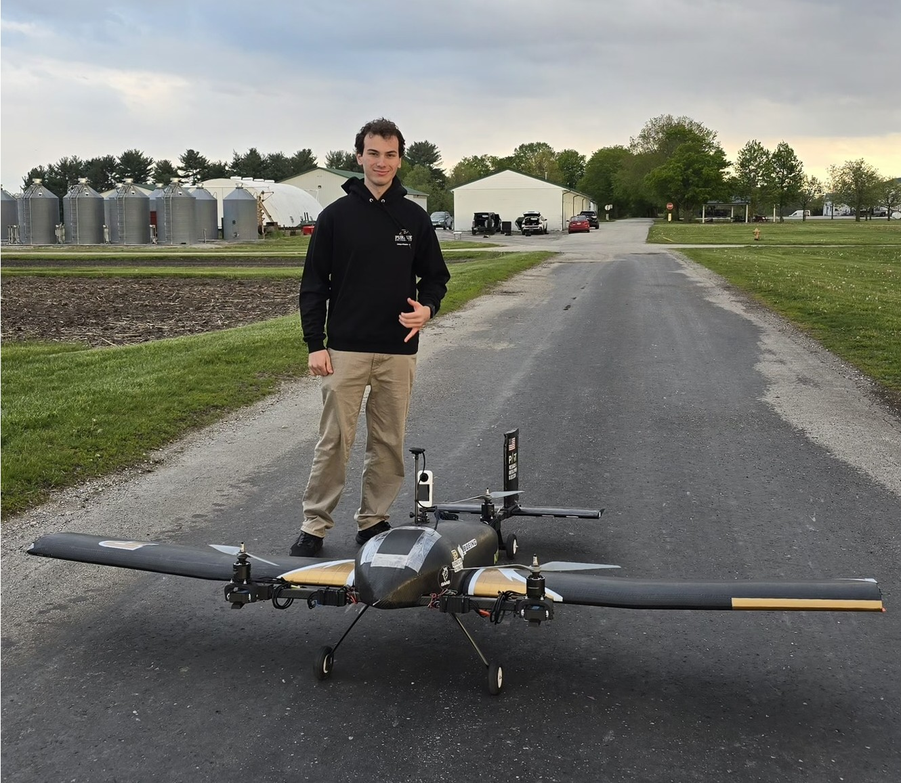
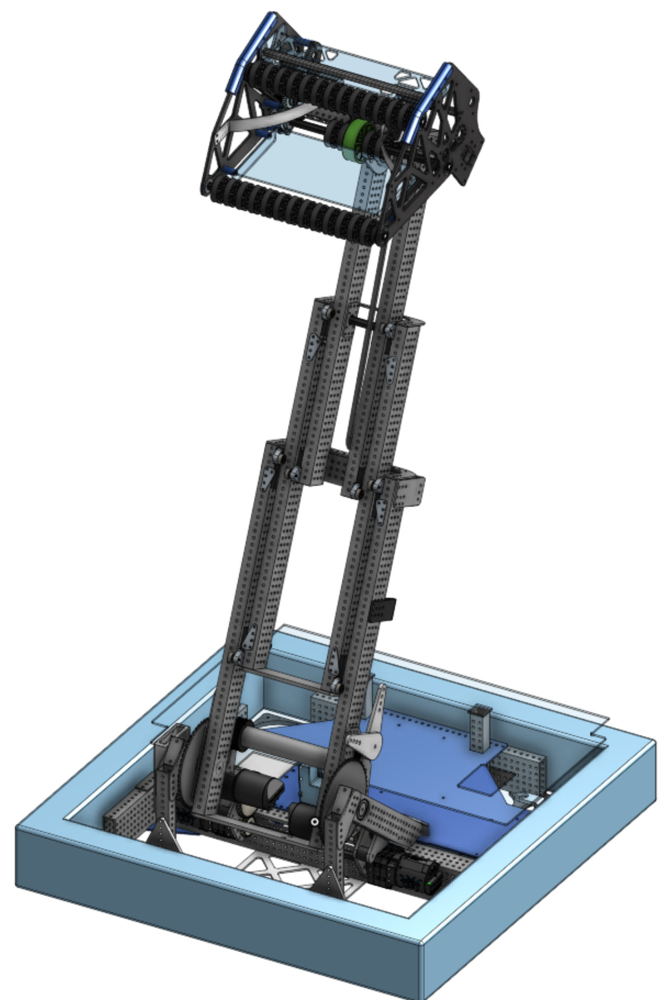
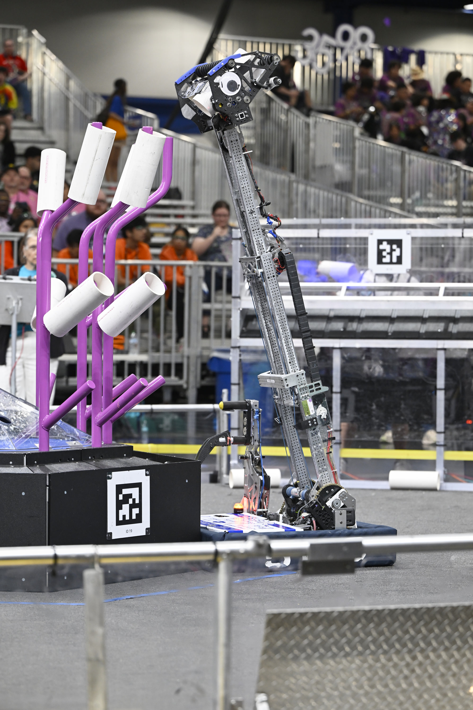
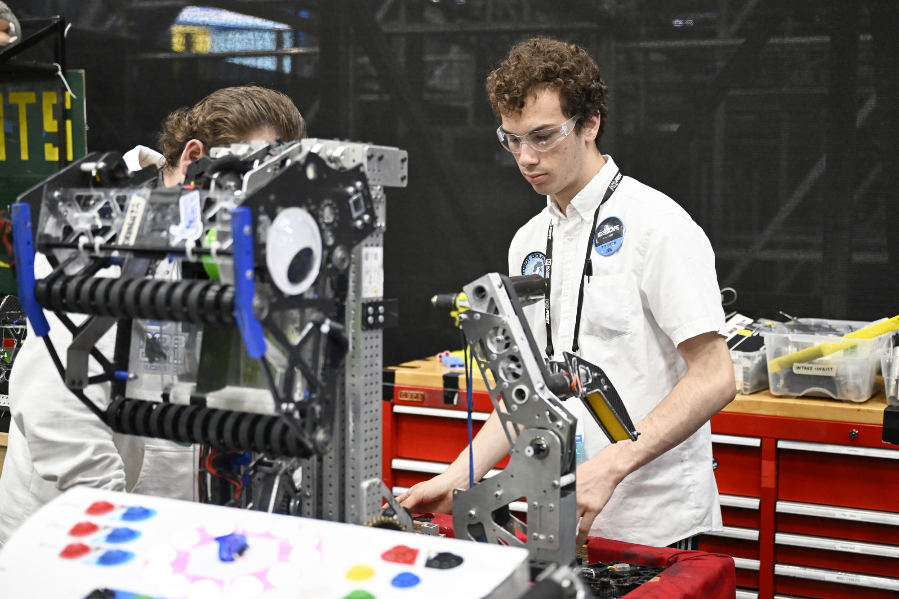
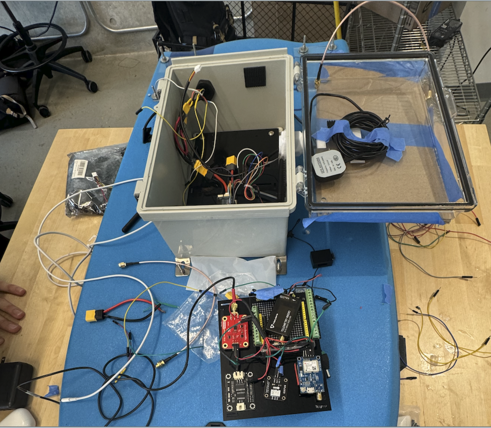
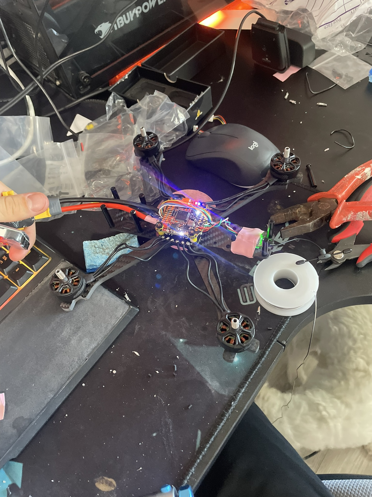

I find what's not working in a system and build the fix — whether it's a tilt-rotor mount, a team's operations pipeline, or a post-crash diagnostic workflow.
About
I'm a rising sophomore Mechanical Engineering student at Purdue University, originally from Southern California. My path started with competitive robotics in high school, moved into autonomous vehicles at UCSD's COSMOS program, and now I'm designing flight-critical hardware for a custom VTOL UAV at Purdue.
A theme you'll notice across these projects: I tend to end up at the boundary between systems — mechanical and software, design and operations, my subsystem and the one next to it. On my FRC team, that meant restructuring how 48 people coordinated across sub-teams and rebuilding fundraising operations from the ground up. On Purdue's Aerial Robotics Team, it meant going beyond my propulsion subsystem role to parse flight logs and diagnose a system-level crash. That boundary is where the interesting problems live, and it's where I do my best work.
Aerial Robotics Team, Purdue University · Sept 2025 – Present
Kiwi is a custom VTOL tricopter tiltrotor UAV, designed and built from scratch by the R&D division of Purdue's Aerial Robotics Team. As Propulsion Subsystem Lead, I was the sole designer of the tilt-rotor mechanism for both forward motors and the static rear motor mount.
The design challenge was packaging a tilt-rotor assembly that could route high-current ESC and battery wiring within tight spatial and mass constraints, while minimizing moving parts to reduce failure points. I used parametric SolidWorks CAD to maintain tight tolerances across the assembly and make iteration fast when constraints shifted. Every design decision was driven by the question: what's the simplest mechanism that still meets the load, clearance, and range-of-motion requirements?
I performed static load testing on all designed components to verify structural integrity under expected operational loads before flight testing. I also worked directly with the avionics team to resolve system-level hardware integration issues, making sure the mechanical assemblies played nicely with the electronics they were carrying.



After a flight test ended in a crash, I took it on myself to figure out what went wrong. I parsed raw ArduPilot DataFlash binary logs across two flights and traced the root cause to uncompensated compass interference from motor current. All three compasses were internal to the CubeBlack with no motor compensation configured. During the VTOL takeoff, peak hover current caused compass innovation to spike to 14 at motor spin-up and never recover. With no in-flight compass learning and no GPS heading fallback, the EKF lost its yaw source entirely and began integrating gyros only. The two attitude estimators diverged to 180° apart, and when the EKF attempted a yaw reset, the controller saw a 177° roll error in a single timestep and slammed full correction — that was the moment it was over. I then compared against a previous successful flight that used a horizontal takeoff, showing the same bad compass data was present but never triggered the failure because motor current stayed low during the compass-critical phase. Same airframe, same firmware, different outcome — entirely explained by takeoff profile. This wasn't part of my role as propulsion lead. It was a just a problem that needed solving.
Capistrano Unified School District · Aug 2021 – May 2025
I served as Vice President and lead mechanical designer for a 48-person FIRST Robotics Competition team, guiding the team to the FRC World Championship while earning team MVP. Our robot won the Excellence in Engineering Award, the Quality Award, and a Regional Championship.
My technical focus was on mechanism design using Onshape CAD, but what set my contribution apart was how I operated at the boundary between sub-teams. I worked directly with the programming team to ensure that every mechanism I designed could be reliably controlled — that sensor placements made sense, that tolerances were tight enough for the control loops to work, and that mechanical assemblies didn't create problems that software would have to paper over.
On the operations side, I managed a department of eight students responsible for fundraising and outreach. We raised over $200,000 through grant campaigns and community outreach, and organized events at elementary and middle schools and Women in STEM programs. I didn't just run the existing playbook — I restructured how the department pursued grants and coordinated outreach to make the pipeline more repeatable and less dependent on any single person.



When I joined Team 5199 as a sophomore, the mechanical and programming sub-teams operated mostly in parallel — designs would get thrown over the wall and problems surfaced late. By the time I was VP, cross-team integration was a deliberate part of our process. I made it standard practice for mechanism designers to sit with programmers during control system development. The same instinct applied to operations: I rebuilt the fundraising pipeline so it didn't collapse when one person graduated. Both were the same kind of problem — a system that worked but had a single point of failure — and both needed the same kind of fix.
UCSD COSMOS, Jacobs School of Engineering · August 2024
With a team of four, I built an autonomous surface vehicle designed to survey lake health by collecting pH, temperature, and GPS data at programmed waypoints. The project addressed ocean acidification monitoring: we equipped a body board with thrusters and a sensor array, then programmed it to autonomously navigate a predefined route while streaming environmental data back to shore in real time.
The USV was split into two electrically isolated subsystems. The data subsystem used an Adafruit Metro M4 microcontroller to collect readings from an analog pH sensor and a digital temperature sensor, then transmitted formatted data strings over a LoRa telemetry radio via serial TX/RX to a base station running a SQLite database. The control subsystem ran a Kakute H743 flight controller paired with an M80 Pro GPS, configured through ArduPilot Mission Planner with autonomous waypoint navigation.
We designed all mounting hardware in Onshape, then laser-cut and 3D-printed the parts. After initial testing revealed interference between subsystems, we iterated to a removable multi-tiered mounting design that physically isolated the data electronics on an upper layer. Testing at Lake Miramar, we successfully collected correlated pH and temperature data and confirmed autonomous waypoint tracking.

On a team of four, I gravitated toward the integration layer — configuring the ArduPilot flight controller, tuning the autonomous waypoint navigation, and debugging the LoRa telemetry link when we hit transmission issues caused by incorrect power settings. This was also my first time isolating electrical subsystems to prevent interference, a lesson that directly informed how I think about wiring and packaging on UAV Kiwi.
Personal Project · July – August 2025
I engineered a 5-inch propeller FPV racing drone from component selection through final flight tuning. This was a solo build — no team, no instructor, just datasheets and forums. I selected and integrated ESCs, a power distribution system, flight controller, and FPV camera/VTX stack, then performed PID tuning and sensor calibration to achieve stable, responsive flight dynamics.
This project taught me more about flight dynamics than anything I'd read in a textbook. Feeling the difference between a well-tuned and poorly-tuned PID loop through the sticks gave me an intuitive understanding of control response that directly translates to the work I do now on UAV Kiwi. When I'm designing propulsion mounts and thinking about vibration isolation or motor placement, I'm drawing on what I learned watching this quad oscillate, wobble, and eventually fly clean.

Skills & Tools